About
私について
健康的な生活を送ることがマイブーム。
-
1.出来るまで頑張れます
入社して３か月にしていきなりリーダーポジションを任されました。 そして新会社になりマニュアルも一新されました。 このような状況の中でも空いた時間に資料やメモの確認、先輩が忙しくない時に分からない所を聞きに行くなどの努力をしながら業務に取り組んでいました。 継続した結果、サービスカウンター業務、新人教育、レジ締めと任される仕事が増えました。
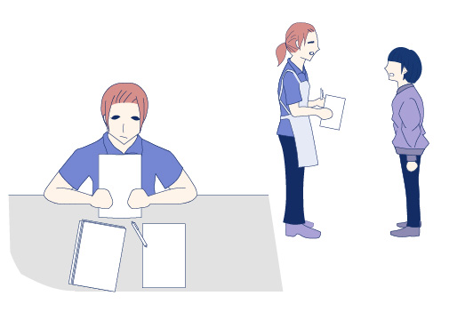 -
2.培った継続力
仕事をしながらWebデザインを取り組んで一年経過しました。 「スモールステップ」で取り組めることを自分で設定し実行しながら習慣化が出来ました。 今では、筋トレなど健康習慣にも活かし、心身ともに健康になれました。
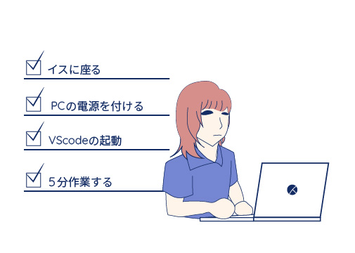 -
3.ミスをなくす努力をします
レジ業務にあたって気を付けている事の一つがお金を扱うので間違いがないように慎重に確認をしています。 例えばレジ業務中、総菜、パンなどよく割引になっている商品はパッケージなどをよく見てから打ち、目の前のモニターでも確認し、割引になっているか否か見ています。 会計後にミスが発覚してしまうと、修正業務をかけなければならず、それはお客ざまの時間も店舗の信用も奪ってしまうため、私のレジでは出さないようにしようと心掛けています。
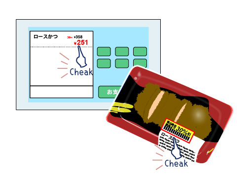
Future
私の未来
Favorite
はまっていること
最初はダイエット目的でしたが、今ではそういう生活をしていることが心地よくて、 自分の習慣として成り立ちました。 ストレス発散にもなり、未来の自分の体形への楽しみも増えました。 約5kg痩せてリバウンドもしていません!
-
1.毎朝の朝食
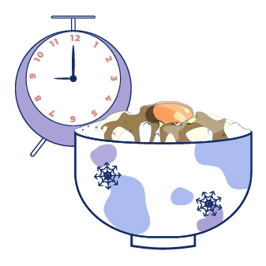 -
2.美味しく置き換え
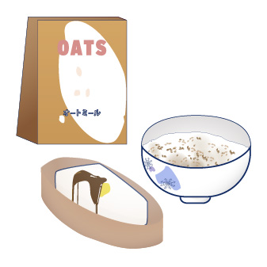 -
3.タンパク質を意識
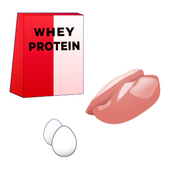 -
4.食事制限ではなく食事管理
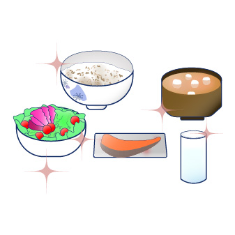 -
5.筋トレで体を引き締める
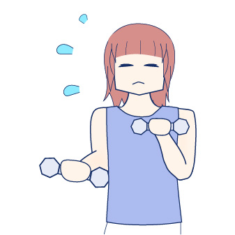 -
6.ウォーキング
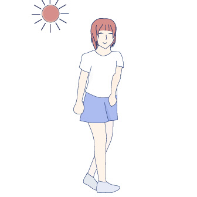 -
7.ストレッチ
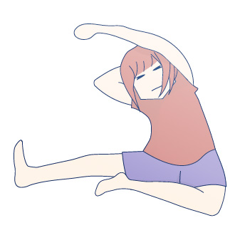 -
8.完璧を目指さない
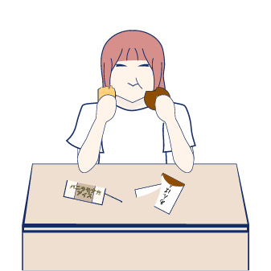